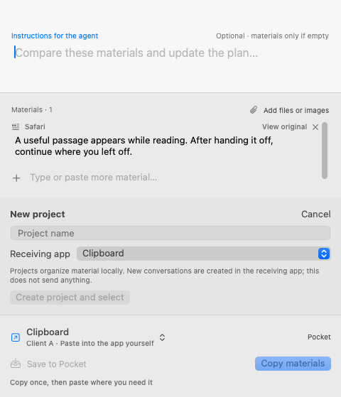
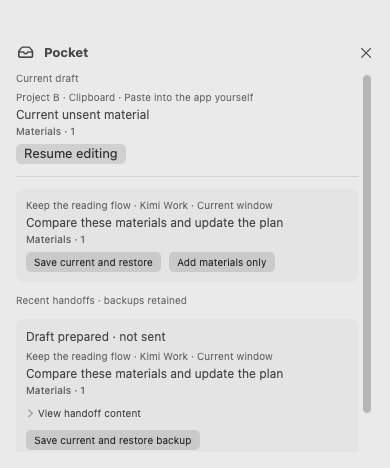
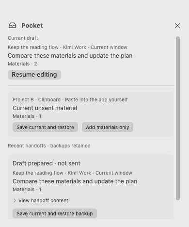

Make the handoff in one panel.
Edit materials, add text and write instructions for the agent. Projects organize context; the app and current window identify the actual destination.
57 / 57
Edit instructions and material directly.
Keep the source for comparison; hand off the edited text. Return inserts a line break; Command-Return continues.

Create without losing your input.
Projects are created locally. New sessions are created in the receiving app while the current draft is retained.


Pocket keeps the complete draft.
Materials, instructions and destination stay together. Restore after saving current input, or add materials only.


Restore a handoff backup.
A prepared draft is not a sent message. Recovery restores the handoff copy; later edits in the receiving app are not synchronized.


Verification from the running app
All 228 native UI assertions passed across four language/appearance combinations. These 16 screenshots come from the running SwiftUI / AppKit interface with fixture data.
Current integration scope
Current connections prepare text drafts or clipboard content. Files and images can be kept in Pocket but must be added manually in the receiving app. External session addresses and background receipt confirmation are not verified. Signed-in applications, VoiceOver, multiple displays and fullscreen still need device validation.